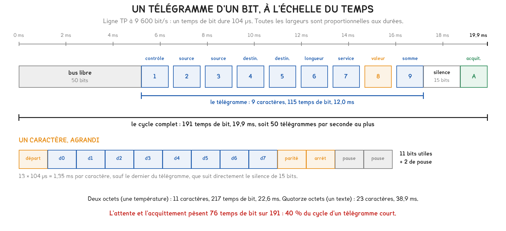
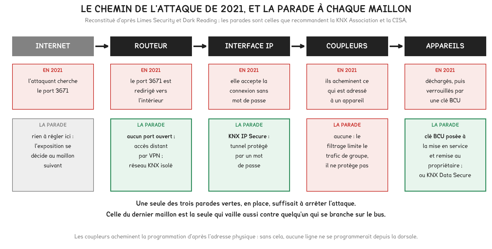

Document de formation du professeur — ne pas diffuser aux étudiants
Formation du professeur · BTS FED option C
Un immeuble allemand rendu inutilisable par une clé de quatre octets en 2021, une faille que la CISA classe « activement exploitée » en 2026, une tour de 34 étages tenue par 1 987 participants à Buenos Aires. Cinq cas réels, et la théorie que chacun oblige à sortir : adresse physique et adresse de groupe, objets et drapeaux, tables de filtrage, charge du bus, organisation d'un projet.
Savoirs travaillés
Un projet KNX n’est pas une somme d’appareils, c’est une somme d’adresses. Les cinq cas de cette page le montrent chacun par un bout : une attaque abuse de la manière dont on adresse les participants, une faille tient à un mécanisme de protection posé lors de l’adressage, une tour se tient grâce à une topologie choisie avant le premier téléversement, et une norme de sécurité chiffre ce que transportent les adresses de groupe.
Le fil commun tient en une phrase, et elle est déjà celle de la séance d’adressage. L’adresse physique désigne un appareil, l’adresse de groupe désigne une fonction. Tout le reste, la programmation, le filtrage, la charge du bus, la sécurité, découle de cette séparation. Un projet bien construit est celui où elle est tenue partout.
On ne programme pas des liaisons entre appareils : on écrit dans chaque appareil sa table d’adresses de groupe, puis on laisse chacun décider seul. C’est ce qui rend un ajout gratuit, un filtrage possible, et une attaque logicielle dévastatrice quand l’installation est jointe à Internet sans protection.
Deux réglages de la ligne TP1 servent tout au long de la page, et ils sont ceux de la documentation KNX : 30 V à l’alimentation, 21 V au minimum chez le dernier participant, 640 mA et 64 participants par ligne, 10 mA par participant. Les trois longueurs, 350, 700 et 1 000 m, ne sont pas refaites ici : elles se calculent dans la leçon d’atelier, et le cours de base de la KNX Association les justifie.
En octobre 2021, un bureau d’ingénierie allemand demande de l’aide à la société de sécurité Limes Security : quelqu’un a pris la main sur la gestion technique d’un immeuble de bureaux par Internet. Selon le rapport de Limes Security, environ 75 % de plusieurs centaines de participants KNX ne fonctionnent plus, et l’exploitant fait tourner le bâtiment à la main, certains organes recâblés derrière des disjoncteurs.
Pour comprendre pourquoi l’attaque porte, il faut savoir ce que « décharger » suppose. Le logiciel de mise en service ne dialogue avec un participant que par son adresse physique, zone.ligne.participant. Cette adresse voyage en clair dans le champ source de chaque télégramme, et le mode de programmation la rend lisible à qui écoute le bus. Un attaquant présent sur le bus dispose donc de tout ce qu’il faut pour écrire dans chaque appareil.
Pour aller plus loin
L’adresse physique est un numéro d’inventaire dans la topologie. Elle tient sur trois nombres, une zone de 0 à 15, une ligne de 0 à 15, un participant de 0 à 255, et le participant 0 d’une ligne est toujours son coupleur. Elle sert à programmer et à diagnostiquer, jamais à commander en fonctionnement normal.
L’adresse de groupe est une fonction. En fonctionnement, un poussoir écrit une valeur sur une adresse de groupe, et tous les appareils dont la table la contient réagissent. La structure à trois niveaux offre 32 × 8 × 256 = 65 536 combinaisons, dont 0/0/0, réservée.
La conséquence, essentielle pour ce cas : l’attaque ne vise pas les fonctions, elle vise les appareils. Effacer les tables d’adresses de groupe suffit à ce que plus aucune fonction n’existe, sans qu’aucune adresse de groupe n’ait été touchée. On efface le carnet d’adresses, pas les correspondants.
La clé BCU est une protection prévue par le standard : une fois posée sur un participant, elle interdit tout téléversement à qui ne la connaît pas. Elle tient sur quatre octets, huit caractères hexadécimaux, soit 2³² = 4,29 milliards de valeurs.
Cette taille est la bonne nouvelle et la mauvaise. Contre un attaquant qui voudrait deviner une clé posée par l’installateur, 4,29 milliards de valeurs sont une muraille. Mais quand l’attaquant pose la clé, c’est l’exploitant qui doit la deviner pour reprendre la main, et une recherche exhaustive sur le bus, à quelques dizaines de millisecondes par essai, demanderait des années.
Limes Security n’a pas attendu : ses spécialistes ont lu la mémoire des processeurs, là où la protection en lecture manquait, pour en extraire la clé. Selon le récit de Dark Reading, l’attaquant ayant posé la même clé sur tous les participants, l’équipe l’a retrouvée en 45 minutes et l’installation a été rétablie ensuite en une demi-heure. Une clé différente par appareil aurait rendu la reprise bien plus longue.
Un télégramme ne s’adresse jamais à un appareil en fonctionnement, mais la programmation, elle, se fait par l’adresse physique. C’est cette voie que l’attaque emprunte. Séparer information et énergie, comme au cours 1, ne protège donc de rien ici : l’attaque reste dans la seule chaîne d’information, et c’est elle qui commande tout.
En classe. Ce cas est la meilleure entrée en matière de la séance DOMA11 : il rend concret le fait qu’un participant garde tout dans sa propre mémoire, et qu’aucune centrale ne le sauve. On peut demander aux étudiants, avant tout cours, pourquoi couper le courant ne répare rien, et pourquoi rebrancher un appareil neuf à la place ne suffit pas non plus tant qu’on n’a pas le projet.
Le 15 juillet 2026, l’agence américaine de cybersécurité, la CISA, ajoute la faille CVE-2023-4346 à son catalogue des vulnérabilités activement exploitées, et impose aux administrations fédérales de la traiter avant le 29 juillet au titre de la directive BOD 26-04. La faille avait fait l’objet de l’avis ICSA-23-236-01 dès le 24 août 2023, sur signalement de Felix Eberstaller, de Limes Security.
La faille n’est pas un défaut de mise en œuvre d’un fabricant, mais une propriété du mécanisme lui-même, ce que traduit son classement : CWE-645, mécanisme de verrouillage trop restrictif, et une gravité CVSS de 7,5. Aucun correctif logiciel ne peut donc la fermer ; seule la manière de livrer les projets le peut.
Pour aller plus loin
Un participant KNX accorde une autorisation de connexion à qui veut le programmer. Dans la variante la plus simple, l’« Option 1 », cette autorisation est ouverte tant qu’aucune clé BCU n’a été posée : n’importe quel outil peut se connecter et écrire, y compris poser une clé.
La parade est donc d’une simplicité qui déroute : poser soi-même la clé BCU sur tous les participants d’un projet terminé. Une porte que l’installateur a fermée ne peut plus être fermée par un attaquant. La recommandation de la CISA tient en une ligne, et elle est la même que celle de la KNX Association : poser la clé, et la remettre au propriétaire dans la documentation du projet.
L’ampleur du problème tient à ce qu’il reste ouvert. Selon les relevés d’Alpha Strike Labs cités par Limes Security, plus de 16 000 installations potentiellement vulnérables étaient encore exposées sur Internet dans les pays germanophones en 2023, et les signalements se poursuivaient au-delà.
La faille de 2023 a fait entrer dans les recommandations officielles une exigence que les intégrateurs négligeaient : ce qu’on remet, et à qui. La CISA écrit de remettre la clé BCU au propriétaire du bâtiment dans la documentation du projet. La KNX Association renvoie à sa liste de contrôle de sécurité.
Concrètement, la fin d’un projet KNX n’est pas le dernier téléversement, c’est la remise d’un ensemble : le fichier de projet du logiciel de mise en service, les clés, dont la clé BCU et, sur une installation sécurisée, le trousseau de clés, et un plan de récolement à jour. Sans le fichier de projet, une évolution ultérieure oblige à tout relire sur le bus ; sans les clés, elle est impossible ; sans le plan de récolement, elle est un dépannage à l’aveugle.
C’est la même exigence que celle du cours 1 sur la GTB : un dispositif technique n’est livré que lorsque celui qui l’exploite sait s’en servir et le reprendre.
En classe. Ce cas prépare la remise du dossier d’installation de la fin de première année. On peut le poser en question ouverte : que faut-il remettre au client pour qu’il ne soit pas prisonnier de son installateur ? La réponse, le fichier de projet et les clés, est aussi ce qui protège l’installation d’une reprise sauvage. Le fil B de la semaine 12 fait vivre l’autre versant, le téléversement, où l’on voit que sans le projet on ne peut rien.
Après une première vague d’attaques, la KNX Association a mis en avant son architecture KNX Secure, dont elle a annoncé la normalisation selon la norme EN 50090-4-3 le 24 octobre 2017, puis la reconnaissance internationale comme norme ISO 22510 en novembre 2019. Selon la KNX Association, KNX Secure existe depuis 2015 et repose sur un chiffrement AES 128 CCM conforme à la norme ISO 18033-3.
Ce cas oblige à savoir ce que transportent réellement les adresses de groupe, car c’est cela que Data Secure protège. Une adresse de groupe ne relie pas des appareils : elle relie des objets de communication. Chaque objet porte une taille, un type de point de données, le DPT, et des drapeaux qui disent ce qu’il a le droit de faire.
| DPT | Ce qu’il transporte | Taille |
|---|---|---|
| 1.001 | commutation : marche ou arrêt | 1 bit |
| 1.008 | montée ou descente | 1 bit |
| 3.007 | variation relative | 4 bits |
| 5.001 | pourcentage, de 0 à 100 % | 1 octet |
| 9.001 | température en degrés Celsius | 2 octets |
Pour aller plus loin
Chaque objet porte cinq drapeaux : C communication, L lecture, E écriture, T transmission, A actualisation. La logique se formule en une règle, et elle vaut à chaque fois : C partout ; T sur ce qui émet ; E sur ce qui reçoit ; L sur ce qu’un autre appareil doit pouvoir interroger, c’est-à-dire les états et les mesures.
L’erreur qui révèle une incompréhension est d’inverser T et E. Un poussoir qui commande émet, donc porte T ; le pré-actionneur qui exécute reçoit, donc porte E ; et sur l’adresse d’état, les rôles s’inversent, car c’est le pré-actionneur qui émet ce qu’il sait de sa sortie.
Une adresse de groupe ne réunit que des objets de même taille, et en pratique de même type. Associer un objet de 1 bit et un objet de 2 octets est refusé par le logiciel : le récepteur recevrait deux octets là où il en attend un seul bit.
La commande et l’état sont deux adresses de groupe distinctes. L’état d’une sortie peut changer sans passer par la commande : par un détecteur, par l’écran, par la GTB, par la façade du pré-actionneur, au retour du secteur. Seul le pré-actionneur connaît la position réelle de sa sortie : l’adresse d’état qu’il émet est l’unique source de vérité, et tout voyant qui affiche un état l’écoute, jamais l’adresse de commande.
Pour aller plus loin
Le premier logiciel de mise en service à intégrer les deux mécanismes est ETS 5.5, en avril 2016. Depuis, une installation sécurisée impose un ordre : un mot de passe de projet d’abord, car le logiciel devient l’administrateur ; puis, pour chaque participant, la saisie de sa clé d’usine FDSK, par code QR ou à la main. Le logiciel remplace ensuite cette clé d’usine par une clé de travail que lui seul et l’appareil connaissent.
L’adoption progresse : la KNX Association annonçait plus de mille participants sécurisés certifiés fin 2024, et une certification VDE « sécurité de l’information testée » obtenue en 2022. La cohabitation avec l’existant est prévue : un « proxy de sécurité » permet à des participants non sécurisés de dialoguer avec des participants sécurisés pendant une rénovation.
Pour la classe, la limite est utile à connaître : Data Secure protège le contenu des télégrammes, il ne masque pas qui parle à qui. Et il ne dispense pas de la clé BCU ni du VPN : ce sont trois protections de nature différente.
En classe. Ce cas se traite en prolongement de DOMA11, une fois les objets et les drapeaux installés. La bonne question à poser : puisque Data Secure chiffre les objets de groupe, qu’est-ce qui reste à protéger par ailleurs ? La réponse, l’accès physique au bus et l’exposition IP, ramène aux deux premiers cas et donne la mesure de ce qu’une seule protection ne couvre jamais.
Lauréate d’un KNX Award en 2024, la tour TBM du quartier d’affaires de Buenos Aires, conçue par l’architecte César Pelli et achevée en 2022, est le siège d’une banque. Selon la fiche publiée par la KNX Association, elle réunit 1 987 participants KNX sur 130 m de haut et 52 000 m², avec plus de 6 800 luminaires DALI intérieurs et 415 luminaires extérieurs, le tout remonté dans une supervision qui compte plus de 30 000 points.
Un tel bâtiment oblige à savoir ce qu’une ligne peut porter, et une ligne ne se mesure pas seulement en participants. Elle se mesure aussi en télégrammes par seconde, et ce nombre est petit. À 9 600 bit/s, un télégramme d’un bit occupe le bus environ 20 ms : une ligne n’en transporte qu’une cinquantaine par seconde.
Pour aller plus loin
Un caractère KNX vaut 8 bits de données, plus 3 bits de contrôle, plus 2 bits de pause, soit 13 temps de bit. À 104 µs le temps de bit, un caractère dure 1,35 ms.
Un télégramme d’un bit compte 9 caractères, soit 115 temps de bit une fois retirée la pause finale, à quoi s’ajoutent 50 temps de bit de bus libre avant l’émission, 15 de silence et 11 pour l’acquittement. Le cycle complet fait 191 temps de bit, soit 19,9 ms, d’où 50 télégrammes par seconde au plus.
Deux enseignements en découlent. D’abord, un télégramme qui transporte deux octets, une température, dure 22,6 ms, et un texte de quatorze octets 38,9 ms : plus la charge utile est grosse, moins il en passe. Ensuite, l’attente et l’acquittement pèsent 76 temps de bit sur 191, soit 40 % du cycle : le débit utile est bien inférieur aux 9 600 bit/s bruts.

C’est ce plafond de cinquante télégrammes par seconde qui rend le filtrage vital. Chaque coupleur tient une table de filtrage, construite par le logiciel à partir des associations d’adresses de groupe, et ne laisse passer que les télégrammes destinés à l’autre côté. Sans lui, le trafic de toutes les lignes se retrouverait sur chacune, et la dorsale saturerait.
Pour aller plus loin
Une dorsale TP1 partage le même débit qu’une ligne. Si les 34 étages devaient échanger leur trafic et remonter 30 000 points de supervision par une dorsale TP1, celle-ci deviendrait le goulet d’étranglement du bâtiment : le rapport des débits entre l’Ethernet à 100 Mbit/s et le bus à 9 600 bit/s est d’environ 10 000.
Une dorsale IP supprime cette limite. Elle franchit les distances par l’Ethernet et la fibre, isole galvaniquement les étages, ce qui compte sur 130 m de hauteur, et raccorde directement la supervision. Les coupleurs de zone deviennent des routeurs IP, qui portent les mêmes adresses zone.0.0 que les coupleurs qu’ils remplacent.
La supervision de la tour repose d’ailleurs sur une passerelle vers le monde du génie climatique : les 30 000 points remontent dans un système qui parle aussi BACnet, exactement la passerelle point à point du cours 3.
Une ligne se dimensionne sur deux limites, et sur la plus contraignante des deux : le nombre de participants, 64 au plus, et le courant, 640 mA. Avec une réserve de 20 %, on s’arrête à 51 participants par ligne. La tour, à 1 987 participants, demande donc au moins 39 lignes, et 39 lignes demandent au moins 3 zones, puisqu’une zone n’en porte que 15.
En classe. Ce cas donne l’échelle qui manque aux maquettes d’atelier. On peut faire retrouver aux étudiants le nombre minimal de lignes et de zones de la tour à partir des 1 987 participants, comme au bloc 3 de DOMA5, puis leur faire estimer le nombre de télégrammes qu’un scénario général engendre. Le fil B de la semaine 12 crée un projet à cette échelle réduite, mais la logique est la même.
La KNX Association recommande une structure d’adresses de groupe à trois niveaux et promeut une organisation par fonction, exposée notamment dans un article de juillet 2021. Deux lauréats des KNX Awards 2024 en donnent l’échelle : l’usine Biohort en Autriche, avec 129 lignes DALI sur 80 000 m², et un programme de casernement du ministère de la défense britannique, conçu pour environ 16 500 lits sur dix ans, conforme à la classe A de l’automatisation et noté au-dessus de 95 % à l’indice de préparation au numérique.
Le piège de la structure à trois niveaux est le médian, borné à huit valeurs. Une convention qui range les locaux dans le médian ne tient pas au-delà de huit locaux, et un grand bâtiment en compte des dizaines. C’est le point que le logiciel ne signale pas et que le concepteur doit anticiper.
Pour aller plus loin
Trois organisations coexistent. La structure par fonction met la fonction au principal, la sous-fonction au médian, le point au sous-groupe. La structure par bâtiment met la partie de bâtiment au principal, la fonction au médian. La structure par appareil part du type d’appareil. La KNX Association promeut la première, mais un intégrateur expérimenté le dira autrement : la meilleure structure est celle que l’on connaît assez pour la tenir sans faute.
Quand les locaux dépassent huit, deux issues sont recevables, et ce sont celles de DOMA11 : inverser les rôles, en mettant le local au principal, qui en accepte 32, et la fonction au médian ; ou dédoubler les principaux, un pour l’éclairage des locaux 1 à 7, un autre pour les suivants.
Ce qui ne se néglige jamais : nommer. Une adresse 1/2/5 ne dit rien ; « Salle 2, éclairage, commande » dit tout. Sur un projet de 30 000 points, le nom est ce qui rend le dépannage possible, et le logiciel de mise en service peut exporter la liste complète pour la documentation.
Le logiciel de mise en service range les mêmes participants sous plusieurs vues, et chacune répond à une question différente. La vue bâtiment répond à « où l’appareil est-il posé ? ». La vue topologie répond à « sur quelle ligne est-il branché ? », et c’est là que vivent les adresses physiques et les coupleurs. La vue adresses de groupe répond à « quelle fonction est commandée ? ». Une vue métiers, ou fonctions, réunit les appareils d’un même lot, le chauffage par exemple, quelle que soit leur place.
Un appareil figure dans les vues bâtiment et topologie. Une adresse de groupe n’appartient à aucun appareil : elle est une fonction, et les appareils qui la partagent y sont associés. Tenir ces vues à jour est ce qui distingue un projet qu’un autre intégrateur peut reprendre d’un projet dont l’auteur est le seul détenteur.
En classe. L’organisation des adresses est le cœur du livrable de DOMA11, le tableau d’adressage que le fil B consomme. On peut confronter les étudiants à un bâtiment de plus de huit locaux pour leur faire buter sur la limite du médian, et leur faire choisir une convention, puis la défendre. Le point à leur faire dire : la convention se choisit une fois, et se change au prix d’un réadressage complet.
Le raisonnement ordinaire d’un projet KNX suppose une ligne unique, isolée, dont le seul risque est de manquer de tension ou de participants. Deux situations le mettent en défaut, et elles changent la nature du problème.
| Une ligne isolée | Un bâtiment communicant et exposé | |
|---|---|---|
| Le risque principal | manquer de tension au bout | être atteint par le réseau |
| Ce qui dimensionne | 21 V, 640 mA, 64 participants | la charge du bus et la sécurité |
| Le rôle du coupleur | séparer et alimenter | filtrer le trafic entre lignes |
| Ce qui protège | rien à protéger | clé BCU, KNX Secure, VPN, isolement IP |
| La fin du projet | ça fonctionne | le projet et les clés sont remis |
Le filtrage n’est pas une protection de sécurité, et c’est le contresens à prévenir. Un coupleur limite le trafic pour tenir la charge du bus, il ne protège de personne : un attaquant sur le bus contourne le filtrage, qui n’a jamais été fait pour lui. Confondre les deux conduit à croire une installation sûre parce qu’elle est segmentée, alors que la segmentation ne fait que la rendre tenable en trafic.

L’attaque logicielle inverse aussi la hiérarchie des dangers. Sur une installation isolée, le pire est une panne d’alimentation. Sur une installation jointe à Internet sans VPN, le pire est un tiers qui pose une clé BCU à distance, et aucun calcul de chute de tension ne le prévoit. La méthode change parce que le péril a changé de nature : il n’est plus physique, il est réseau.
La séance vérifie qu’une topologie donnée fonctionne ; le bureau d’études fait l’inverse : il choisit le nombre de lignes et de zones à partir d’un nombre de participants et d’une réserve, puis vérifie que le bus tiendra une fonction générale.
On fixe la réserve à 20 %, soit 51 participants utiles par ligne, et l’on se donne un immeuble de bureaux de 900 participants, sur 6 niveaux de 150.
N_lignes = ⌈P / 51⌉ puis N_zones = ⌈N_lignes / 15⌉
Le nombre de lignes s’arrondit vers le haut : 150 participants sur un niveau, c’est 3 lignes, jamais 2.
Pour 900 participants, il faut ⌈900 / 51⌉ = 18 lignes, donc ⌈18 / 15⌉ = 2 zones, reliées par une dorsale IP. Le découpage par niveau est plus lisible que le découpage au plus juste : 3 lignes de 50 par niveau donnent aussi 18 lignes, et chaque ligne garde 14 participants de réserve.
Pour aller plus loin
On veut un scénario « tout éteindre le soir » qui agit sur les 24 groupes d’éclairage d’un niveau. Deux manières de l’écrire, et elles n’ont pas le même coût.
La mauvaise : un télégramme de commande par groupe, soit 24 télégrammes. À 19,9 ms l’unité, la scène met 0,48 s à partir, et le retour d’état de 24 sorties en ajoute autant.
La bonne : une seule adresse de groupe écoutée par les 24 sorties. La commande part en un télégramme, 19,9 ms. Ne restent que les 24 états, que les pré-actionneurs renvoient pour les voyants et la supervision. Le coût d’une fonction centrale n’est donc pas dans la commande, il est dans le retour d’état : c’est lui qu’on dimensionne, et c’est pourquoi on réfléchit à qui a vraiment besoin de l’état.
La règle qui dispense de tout recalculer tient en une phrase. Une ligne porte au plus cinquante télégrammes par seconde ; une fonction qui en engendre davantage doit être répartie, retardée, ou allégée de ses retours d’état inutiles. C’est le même arbitrage partout : ce qui doit être vu en temps réel, et ce qui peut attendre.
Pour aller plus loin
Énoncé. Une ligne porte 40 sondes de température, chacune émettant sa valeur, un télégramme de 2 octets, toutes les 2 minutes. Quelle part de la capacité de la ligne cela représente-t-il ? Et si la supervision interroge chaque sonde toutes les 5 secondes ?
Résolution. Un télégramme de 2 octets dure 22,6 ms. En émission spontanée : 40 sondes × 2 par minute = 80 télégrammes par minute, soit 1,33 par seconde, pour un plafond de 50. La charge vaut 1,33 × 22,6 ms = 3 %. En interrogation toutes les 5 secondes : 8 requêtes par seconde, chacune suivie d’une réponse, soit 8 × (19,9 + 22,6) ms = 34 %.
Vérification de plausibilité. L’émission spontanée est négligeable, la scrutation rapprochée mange le tiers de la ligne : c’est l’ordre de grandeur attendu, et l’argument pour préférer l’émission sur changement à la scrutation.
Ce que l’étudiant doit rédiger. La durée d’un télégramme de 2 octets et son origine, puis les deux charges avec leur unité. Une charge sans le rappel du plafond de 50 télégrammes par seconde ne veut rien dire.
Énoncé. Un hôtel compte 120 chambres, à 6 participants chacune, plus 60 participants de parties communes. Combien de lignes et de zones, à 51 participants utiles par ligne ? La structure d’adresses à trois niveaux, avec le local au médian, suffit-elle ?
Résolution. 120 × 6 + 60 = 780 participants. Lignes : ⌈780 / 51⌉ = 16 lignes. Zones : ⌈16 / 15⌉ = 2 zones. Pour les adresses : 120 chambres dépassent de loin les 8 valeurs du médian, donc la convention par local au médian ne tient pas.
Choisir la structure avant de conclure. On met le local au principal, qui en accepte 32, insuffisant encore pour 120 chambres : il faut dédoubler, un principal par étage par exemple. Par étage de 20 chambres, on retombe sur 20 × 12 = 240 adresses, sous les 256 du sous-groupe.
L’erreur attendue est de valider la structure d’origine parce qu’elle « marche » sur une chambre. Elle ne se révèle fausse qu’à la treizième chambre, et la changer alors coûte un réadressage complet.
Énoncé. Une ligne porte déjà 60 participants, à 10 mA. On veut y ajouter un bouton « tout éteindre » qui agit sur les 30 sorties d’éclairage de l’étage, et un écran qui affiche l’état de ces 30 sorties. Est-ce possible, et à quel coût pour le bus ?
Choisir la méthode avant de calculer. Deux limites, la ligne et le bus. La ligne : 60 participants, plus 2 pour le bouton et l’écran, soit 62, sous les 64 ; 620 mA, sous les 640 : cela passe, mais la réserve est nulle. Le bus : la commande générale est un télégramme, les 30 retours d’état en sont 30.
Résolution. L’appui envoie 1 télégramme sur une adresse générale écoutée par les 30 sorties, 19,9 ms. Les 30 pré-actionneurs renvoient leur état pour l’écran, soit 30 × 19,9 ms = 0,6 s de bus, à condition qu’ils soient sur la même ligne. La fonction est donc possible et brève, mais elle laisse la ligne à sa limite de participants.
Ce que l’étudiant doit rédiger. Les deux vérifications de ligne avec leur marge, puis le coût en télégrammes en distinguant la commande unique des retours d’état. La conclusion tient en une phrase : la fonction passe, mais la ligne est saturée en participants et devra être scindée à la prochaine extension.
| Grandeur | Ordre de grandeur |
|---|---|
| Tension du bus KNX TP1 | 30 V continu, TBTS |
| Tension minimale chez le dernier participant | 21 V |
| Courant d’une alimentation de ligne | 640 mA pour 64 participants |
| Consommation retenue par participant | 10 mA |
| Participants par ligne, sans répéteur | 64 au plus |
| Participants utiles avec réserve de 20 % | 51 par ligne |
| Participants sans répéteur, installation entière | 15 × 15 × 64 = 14 400 |
| Adresses de groupe à trois niveaux | 32 × 8 × 256 = 65 536, dont 0/0/0 réservée |
| Débit d’une ligne TP1 | 9 600 bit/s |
| Durée d’un temps de bit | 104 µs |
| Durée d’un télégramme d’un bit, cycle complet | 19,9 ms |
| Télégrammes par seconde sur une ligne | 50 au plus |
| Part d’attente et d’acquittement dans un cycle | 40 % |
| Longueur d’une clé BCU | 4 octets, soit 4,29 milliards de valeurs |
| Rapport de débit Ethernet / bus TP1 | environ 10 000 |
| Gravité CVSS de la faille CVE-2023-4346 | 7,5 |
Deux réflexes trient l’essentiel. Une ligne ne dépasse ni 64 participants ni une cinquantaine de télégrammes par seconde : au-delà, on scinde. Une clé BCU se pose, elle ne se devine pas : c’est la seule protection qui vaille contre un accès local, et elle se remet au client.
Pour aller plus loin
Justement parce qu’il n’y en a pas. Comme chaque participant garde sa propre programmation, effacer les participants efface l’installation entière : il n’y a pas de centrale à restaurer, mais des centaines de mémoires à reprogrammer, une à une, et chacune verrouillée par la clé de l’attaquant.
La réponse chiffrée qui porte : dans le cas de 2021, environ 75 % de plusieurs centaines de participants étaient à reprendre. L’absence de centrale est une force en fonctionnement, la panne d’un poste de supervision n’arrête rien, et une faiblesse en cas d’attaque, car il n’y a aucun point unique à rétablir.
Non, et c’est le sens de sa taille. Quatre octets font 4,29 milliards de combinaisons ; une recherche exhaustive sur le bus, à quelques dizaines de millisecondes par essai, demanderait des années. C’est pourquoi une clé BCU posée par l’installateur protège réellement.
Le paradoxe est que cette même solidité se retourne contre l’exploitant quand c’est l’attaquant qui pose la clé. La reprise a alors exigé, en 2021, de lire la mémoire des processeurs pour en extraire la clé, et elle n’a réussi que parce que l’attaquant avait posé la même clé partout et que les processeurs ne protégeaient pas leur mémoire en lecture.
Parce que le débit d’une dorsale TP1 est celui d’une ligne, une cinquantaine de télégrammes par seconde. Faire remonter le trafic inter-étages et 30 000 points de supervision par ce goulet est impossible : le rapport de débit avec l’Ethernet est d’environ 10 000.
Une dorsale IP lève la contrainte de débit et de distance, et isole galvaniquement les étages, ce qui compte sur 130 m. Le prix à payer est que la dorsale IP est, elle, exposée au monde réseau : c’est là que KNX IP Secure et le VPN reprennent tout leur sens, alors qu’ils étaient sans objet sur une ligne TP1 isolée.
Plus qu’on ne croit, si on l’écrit mal. Une scène « tout éteindre » sur 24 groupes écrite en 24 commandes met près d’une demi-seconde à partir, et autant en retours d’état. Écrite en une seule adresse de groupe, la commande part en 20 ms ; ne restent que les retours d’état.
Le bon réflexe, pour la classe : une fonction centrale s’écrit avec une adresse de groupe écoutée par tous, jamais un télégramme par appareil. C’est exactement la raison pour laquelle KNX sépare la fonction de l’appareil, et un projet qui l’ignore fait ramer un bus qui n’a pourtant rien de saturé.
Non, et c’est un contresens fréquent. Un coupleur filtre pour tenir la charge du bus : il ne laisse passer d’une ligne à l’autre que les télégrammes destinés à l’autre côté, d’après sa table de filtrage. Un attaquant présent sur le bus n’est pas gêné par cette table, qui n’a jamais été conçue contre lui.
La protection contre l’accès local, c’est la clé BCU et KNX Data Secure ; contre l’accès réseau, c’est l’isolement IP, le VPN et KNX IP Secure. Le filtrage est une affaire de trafic, la sécurité une affaire d’accès : les confondre fait croire sûre une installation qui n’est que segmentée.
KNX Association, KNX IP Secure becomes ISO 22510 (novembre 2019), https://www.knx.org/news/new-iso-standard-knx-ip-secure-becomes-worlds-first-vendor-independent-security-standard : KNX Secure créé en 2015, chiffrement AES 128 CCM conforme à ISO 18033-3, Data Secure et IP Secure.
KNX Association, Maximum data protection for smart buildings (1er février 2018), https://www.installation-international.com/ise-daily/knx-maximum-data-protection-smart-buildings : normalisation EN 50090-4-3 annoncée le 24 octobre 2017, principe des deux mécanismes.
KNX Association, Security: configuring KNX Secure systems in ETS, Mark Warburton (22 novembre 2021), https://www.knx.org/news/security-configuring-knx-secure-systems-ets : mot de passe de projet, clé d’usine FDSK, cohabitation avec des participants non sécurisés.
KNX Association, What makes KNX a secure solution (20 octobre 2024), https://www.knx.org/news/what-makes-knx-secure-solution-your-smart-building : plus de mille participants sécurisés certifiés, certification VDE de 2022, liste de contrôle, VPN et VLAN.
KNX Association, Security: the pitfalls of being hacked, Andy Ellis et Julio Díaz García (21 janvier 2022), https://www.knx.org/news/security-pitfalls-being-hacked-and-how-avoid-them-using-basic-it-skills : port 3671 comme « tapis rouge », clé BCU et ses 4,29 milliards de valeurs.
KNX Association, Best Practice: how to beat the hackers (22 novembre 2021), https://www.knx.org/news/best-practice-how-beat-hackers : port 3671 et adresse multicast, VPN, Data Secure et IP Secure, changement des ports par défaut.
KNX Association, Tricks of the Trade: best practices for KNX group address structures, Michael Bendtsen (28 juillet 2021), https://www.knx.org/news/tricks-trade-best-practices-knx-group-address-structures : les trois structures d’adresses, la structure par fonction promue par l’organisme.
KNX Association, ETS6 Tip and Tricks: KNX topology, Michael Critchfield (14 octobre 2024), https://www.knx.org/news/ets6-tip-and-tricks-knx-topology : coupleurs, coupleurs de segment, tables de filtrage, proxy de sécurité.
KNX Association, KNX Awards 2024 (26 septembre 2024), https://www.knx.org/news/knx-awards-2024-15th-edition-spotlights-best-smart-home-and-building-automation : la tour TBM, l’usine Biohort et le programme du ministère de la défense britannique, avec leurs chiffres.
KNX Projects, TBM Office Building, fiche PRJ004045, https://projects.knx.org/en/detail/PRJ004045 : 1 987 participants, 6 800 luminaires DALI intérieurs et 415 extérieurs, César Pelli, supervision SCADA, intégrateur THI s.a.i.c.
Limes Security, KNXlock — an attack campaign against KNX-based building automation systems, Markus Maier (25 août 2023), https://limessecurity.com/en/knxlock/ : le déroulé de l’attaque d’octobre 2021, 75 % de plusieurs centaines de participants, exploitation manuelle du bâtiment, plus de 16 000 systèmes exposés dans les pays germanophones.
Dark Reading, Lights Out: Cyberattacks Shut Down Building Automation Systems (décembre 2021), reprise sur https://seclists.org/dataloss/2021/q4/161 : port UDP 3671 exposé, clé de 4 octets retrouvée en 45 minutes, recommandations VPN, VLAN et pare-feu.
CISA, avis ICSA-23-236-01, KNX Protocol (24 août 2023), https://www.cisa.gov/news-events/ics-advisories/icsa-23-236-01 : CVE-2023-4346, gravité CVSS 7,5, CWE-645, autorisation de connexion Option 1, poser la clé BCU et la remettre au propriétaire.
CISA, Adds Two Known Exploited Vulnerabilities to Catalog (15 juillet 2026), https://www.cisa.gov/news-events/alerts/2026/07/15/cisa-adds-two-known-exploited-vulnerabilities-catalog : ajout de CVE-2023-4346 au catalogue des vulnérabilités activement exploitées, directive BOD 26-04.
KONNEKTING, Wie schnell ist der KNX Bus? (27 avril 2017), https://www.konnekting.de/en/2017/04/27/wie-schnell-ist-der-knx-bus/ : temps de bit de 104 µs, caractère de 13 temps de bit, attente de 50 bits, durées des télégrammes.
knx-blogger.de, Die KNX Telegramm Interna, Damian (10 mai 2022), https://knx-blogger.de/die-knx-telegramm-interna/ : champs du télégramme, silence de 15 bits, acquittement d’un caractère, une cinquantaine de télégrammes par seconde.
Sources consultées le 13 septembre 2026.
Page de formation, réservée au professeur. Elle s'appuie sur des cas réels documentés ; les sources sont données en fin de page. Les chiffres de topologie et de temps sont ceux de la documentation KNX, recalculés à chaque emploi.